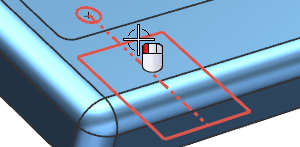
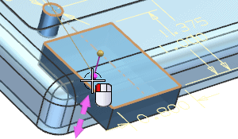
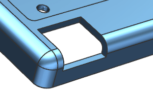
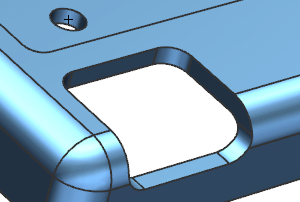

Extrude the sketch
-
On the Feature toolbar, click Extrude
 .
.
-
Select the sketch.

-
Drag the End handle to 0.25 below the sketch plane.

-
Click OK.
-
Click Layer Settings
 and clear the check box for Layer 21.
and clear the check box for Layer 21.

-
On the Feature toolbar, click Edge Blend
 and create a 0.125 radius blend on the 4 corner edges as shown below:
and create a 0.125 radius blend on the 4 corner edges as shown below:

